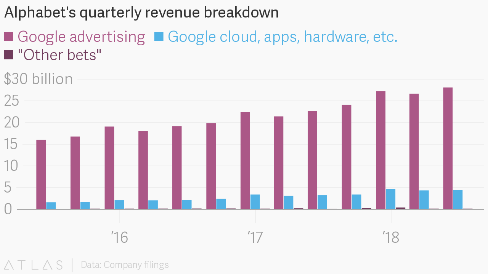
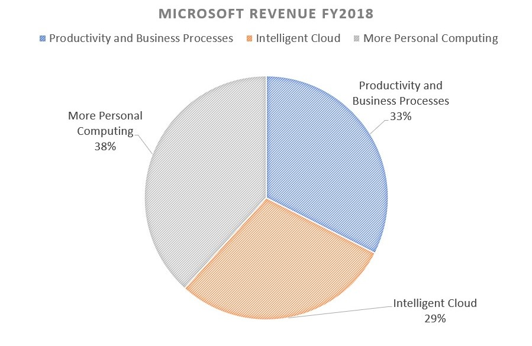

In this day and age, we are always connected to the internet. While you may not realise it, someone somewhere knows about you in more detail than you yourself. This is not speculation, and I am not paranoid.
Since you are reading this, I hope you are not the type of person who thinks, “Yes, they are tracking me, so what?” I might want to change your opinion in a future blog.
According to a report by Norton Inc, more than 3,800 breaches were reported in 2019 alone, with more than 4 billion records compromised. This was far greater than ever before, with a year-to-year growth rate of 54% compared with 2018. Keep in mind that these are only the breaches that were actually reported.
In a noted incident, Yahoo did not report a breach of its emails and passwords for three years and kept it secret until 2016.
With this in mind, the next obvious question is: whom can you actually trust with your information?
Information leaks can happen anywhere: while your data is being processed on a compromised server, while it is being transmitted over a compromised network, or while it is simply being stored at a remote data centre.
Not all leaks are carried out by hackers. Sometimes, companies serve user data directly to interested companies who are happy to pay for it. Facebook's relationship with Cambridge Analytica became a widely discussed example of the risks created when personal information is shared without user consent.
Technology firms did not always prioritise ethics around user data because there were no immediate financial gains in doing so. But we have seen how failing to protect users' data can lead to negative financial outcomes.
Facebook has entered homes and businesses across the world through WhatsApp, Instagram and Messenger. The company introduced end-to-end encryption to gain trust and marketed it as an impenetrable security layer. Later, reports showed that this wall of encryption had been bypassed by governments for months through Pegasus spyware.
Google earns the vast majority of its revenue from advertising. Its advertising service thrives on information gathered by its extensive network of trackers and cookies. On a typical Android phone, Google Play Services can collect information including real-time location, search queries, app usage, websites visited and device usage patterns. This allows the company to create a thorough profile of what you like and dislike.

While Google may try to convince users that information is collected anonymously and no personal data is being collected, it is difficult to ignore the business incentive when such a large share of revenue comes from advertising.
Apple and Microsoft are different in this regard because they have less financial incentive to sell user data. iPhone sales, for example, account for a large share of Apple's revenue.

You can start taking control over your information today. When you see a “Log in with Facebook” or “Sign in with Google” button, consider avoiding it and setting up a separate account instead. Logging in to other websites using Facebook or Google credentials allows those companies to track activity more thoroughly.
There is no such thing as absolute trust, but some companies are definitely more concerned about you than others. On a personal level, I use an updated version of Firefox and prefer Outlook over Gmail. My YouTube tracking is off, and Google search results are not stored on the servers.
There are better alternatives for many offerings from Google and Facebook. Twitter CEO Jack has said that he uses DuckDuckGo instead of Google Search and thinks its app is even better.
It is bad to overthink, but that is not what we are doing here. Give it a thought and let's talk about it. After all, it is your information in someone else's hands.